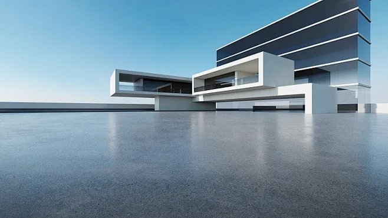
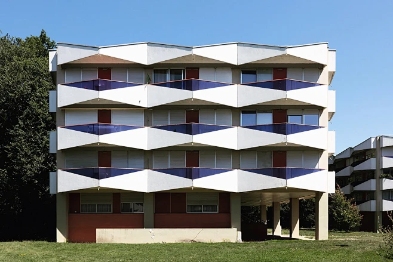
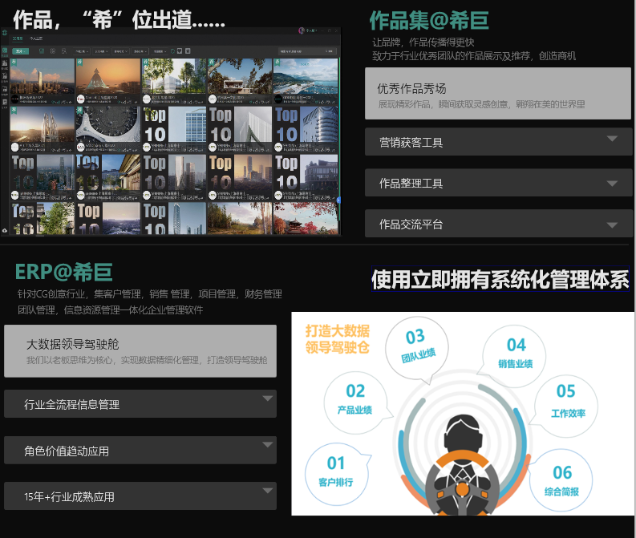
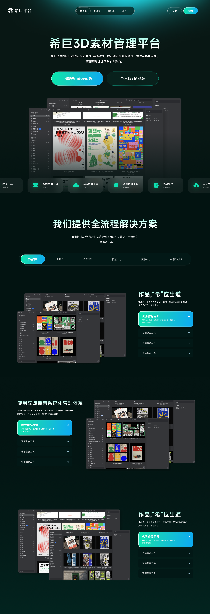
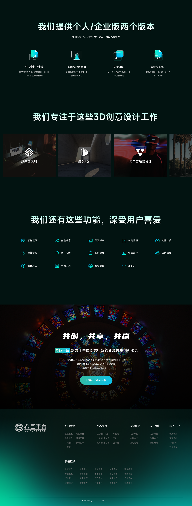
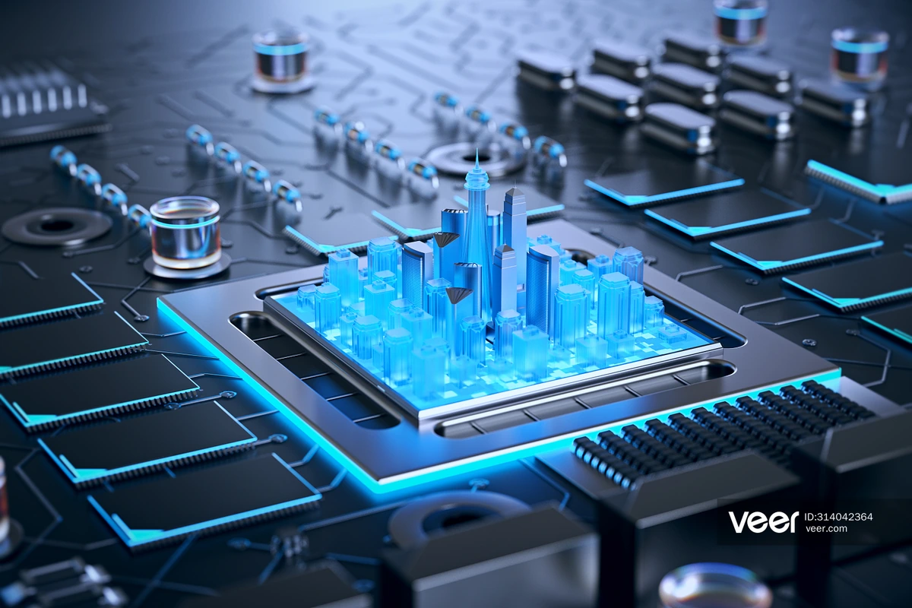
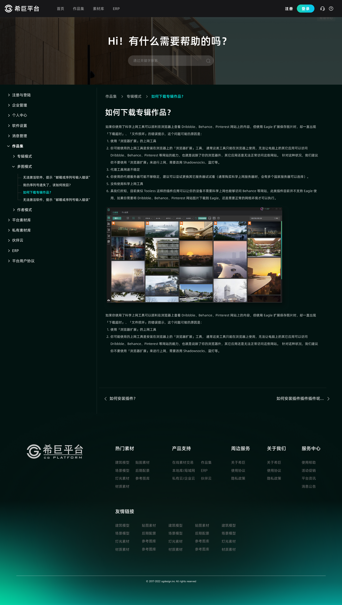
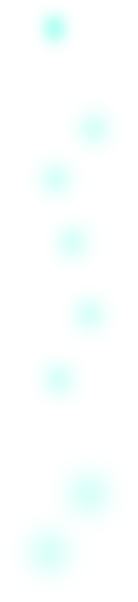
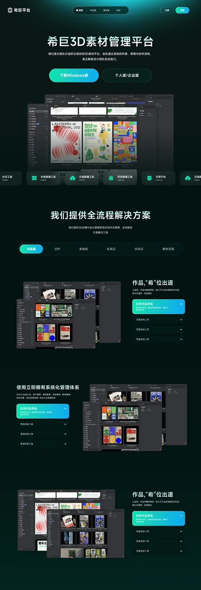

Competitor Analysis
Competitor Analysis
Architecture asset platforms use grids and modular layouts that fit the way architects think. This informed a sense of order to build trust and make browsing more efficient.



Responsibilities
Project Background
Xiju brings resource sharing and innovation to China’s creative industry. Combining advanced internet technologies with 20 years of industry management experience, it provides a shared platform for creative design professionals.
Project Background





Project Background
I want people to see us as a professional architecture magazine.
The pages feel a little cluttered.

Project Background
“A professional magazine, not an asset warehouse.”
“It doesn’t feel premium.”

Refine the visual direction
Unify the brand language throughout
“The page feels cluttered.”
“I’d rather use my own folders.”
Restructure the information architecture
Standardize the visual design throughout
Project Background
A more orderly page layout calls for a visual system as precise as an architectural drawing: modular cards establish a steady rhythm, while a clear information hierarchy guides the eye. These systematic constraints create a rational, predictable interface that conveys professionalism and trust.

Project Background
Competitor AnalysisArchitecture asset platforms use grids and modular layouts that fit the way architects think. This informed a sense of order to build trust and make browsing more efficient.


 Industry Research
Industry ResearchBIM, parametric design and smart construction are driving digital change in architecture. Dark tones, luminous elements and futuristic details express that change through a technology-focused visual style.

 User Research
User ResearchArchitects look for tools that reflect their professional taste and identity, not just their needs. Minimal layouts, refined greys and careful material and lighting details create a sophisticated visual feel.

Project Background
MiSans
Numerals
DIN
0123456789
0123456789
0123456789
Project Background
Xiju’s brand green is adjusted in brightness and saturation, with gradients for a brighter, more technological and futuristic feel. The supporting palette includes green, cyan-blue, and white.
#16D0BE #04C3F5
#04C9B5
#03C4F6
#FFFFFF
Project Background


Built from geometric forms, these icons use contrast, repetition and alignment for simple, expressive shapes. Precise proportions and refined details create a calm, sophisticated feel.


Tool-inspired icons combine translucent frosted glass with luminous outlines. Transitions between highlights and shadows balance physical weight with digital clarity, bringing together technology and professionalism.
More pages

Project Background


项目背景
Architecture
希巨平台致力于中国创意行业的资源共享创新服务，运用前沿的互联网应用技术结合团队20年的行业管理经验，为创意设计行业提供共享平台服务。
行业
建筑设计
地区
上海
改版前后
Architecture
改版前
改版后
我希望他们觉得我们像一本专业的建筑杂志，而不是一个粗糙的素材仓库。现在的问题是看着不高级，好东西（功能）藏得太深、用起来太绕。

张总
希巨平台CEO
页面看着有点乱，找图还行，但想把好图整理起来和团队一起用就特别麻烦。感觉工具不好用，还不如自己电脑里建个文件夹来得直接。
刘工
资深建筑设计师
用户访谈
Architecture
品牌感知优化
视觉方向调整
品牌语言全局统一
品牌定位与感知落差
“像专业建筑杂志，别像粗糙仓库”
视觉品质感与表现力不足
“现在看着不高级”
交互体验优化
信息架构重构
全局视觉规范化
信息架构混乱，视觉层次不清
“页面看着有点乱”
工具失效，未形成替代优势
“不如用自己文件夹”
设计目标推导
Architecture
MiSans
Font
数字
DIN
Regular
Medium
DemiBold
SemiBold
0123456789
0123456789
0123456789
字体规范
Architecture
此图标以几何图形为基底，结合对比、重复、对齐等图形设计技巧，塑造出简练而富有张力的形态。在极简中追求精准的比例与细节质感，传递静谧而高级的视觉感受。
此图标基于工具造型，赋予半透明毛玻璃质感与轮廓光晕。通过精准调控高光与阴影的过渡，在保留实体厚重感的同时，呈现数字化通透光泽，达成科技感与专业度的视觉平衡。
Icon规范
Architecture
更多页面
Architecture
信息架构重构
Architecture
调整页面布局以满足秩序感，需建立如建筑制图般严谨的视觉系统：实施模块化卡片形成稳定节奏，并通过清晰的信息层级引导视线。这种系统性约束能创造出理性、可预测的界面结构，直接传递专业与信任。
科技感
高级感
秩序感
竞品分析
通过分析主流建筑素材平台，发现其界面均采用严格的栅格系统和模块化布局，这与建筑师的思维模式高度重合，从而推导出“秩序感”关键词，是建立专业信任与提升浏览效率的核心视觉特征。
行业研究
通过对建筑行业数字化转型趋势的分析，BIM、参数化设计和智能建造等技术正重塑行业模式，因此平台视觉需通过深色基调、融入发光元素、未来主义元素等，将这种数字化升级转化为具有“科技感”的视觉语言。
用户研究
用户研究表明，建筑设计师在寻求设计素材时，不仅关注功能性，更期待平台能体现其专业审美与行业身份，因此通过极简布局、高级灰色彩体系及精致的图形材质光影细节，营造出符合其职业自豪感的视觉“高级感”。
视觉方向调整
Architecture
色彩规范
Architecture
以希巨品牌绿为主色，调整明度、饱和度并加入渐变，让整体风格更明亮，更有科技感和未来感。辅助色由青绿色、青蓝色和白色组成。
主色
#16D0BE
#04C3F5
BIM
Web
App
Visual Design
辅助色
#04C9B5
辅助色
#03C4F6
辅助色
#FFFFFF
设计小结
Architecture
BIM
Web
App
Visual Design